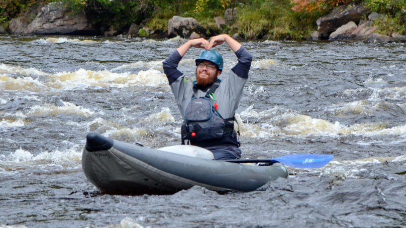

Our Identity
Experience unforgettable river adventures with Dalnjebo Mamba, your go-to rafting outfitter for thrilling whitewater excitement and scenic outdoor escapes. We offer expertly guided rafting trips for all skill levels—whether you’re chasing adrenaline-pumping rapids or looking for a relaxed family-friendly float. With certified guides, top-quality equipment, and strong safety standards, Dalnjebo Mamba delivers an adventure you’ll never forget.